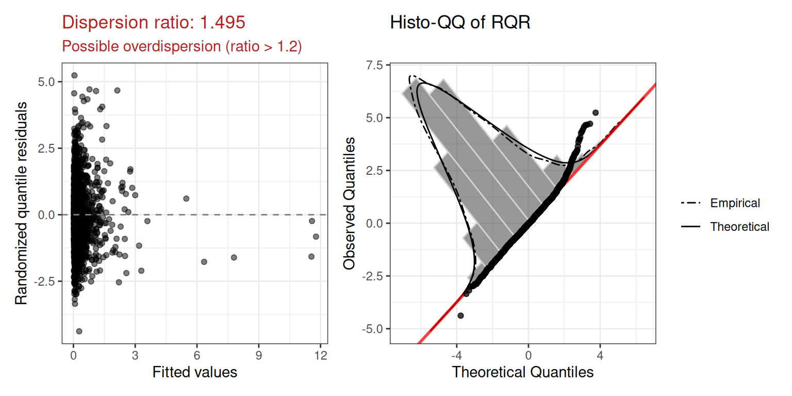
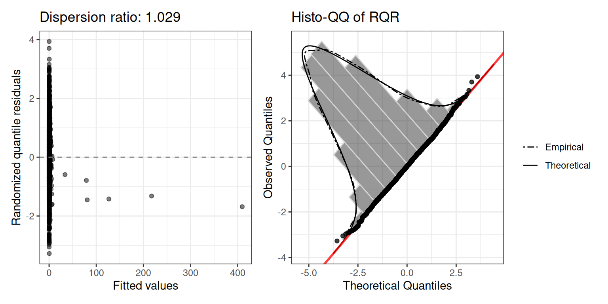

Overview
glmOJ provides a streamlined workflow for fitting,
diagnosing, and interpreting count regression models. The four supported
families are:
| Function | Model |
|---|---|
poissonGLM() |
Poisson GLM |
negbinGLM() |
Negative Binomial GLM |
zeroinflPoissonGLM() |
Zero-Inflated Poisson |
zeroinflNegbinGLM() |
Zero-Inflated Negative Binomial |
A general-purpose wrapper countGLM() fits all four and
selects the best by AIC.
Case Study: Federal Environmental Crime Prosecutions
Greenberg et al. (2026) investigate how environmental and social
factors influence where EPA criminal prosecutions occur across 3,143 US
counties (2011–2020). The response variable FinalEC is a
count of criminal prosecutions per county.
data("Greenberg26.dat")1. Data Exploration
Before fitting, summarizeCountData() gives a quick
numerical and graphical overview of the count response alongside each
predictor.
summarizeCountData(
FinalEC ~ eqi_2jan2018_vc +
pctnonwhite10 +
metro +
gdp2017b +
fac_penalty_count +
CIDDist +
EPAregion,
data = Greenberg26.dat
)
#> $summary
#> mean var var_mean_ratio n_zero n_total
#> 1 0.2356564 0.6490525 2.754232 2654 3085
#>
#> $counts
#> count freq
#> 1 0 2654
#> 2 1 299
#> 3 2 66
#> 4 3 31
#> 5 4 14
#> 6 5 5
#> 7 6 6
#> 8 7 3
#> 9 8 3
#> 10 9 2
#> 11 11 1
#> 12 12 1
#>
#> $plot
2. Poisson Regression
We first fit a Poisson GLM with the Overall Environmental Quality Index and demographic/geographic controls.
mod.pois <- poissonGLM(
FinalEC ~ eqi_2jan2018_vc +
pctnonwhite10 +
metro +
gdp2017b +
fac_penalty_count +
CIDDist +
EPAregion,
data = Greenberg26.dat
)Coefficients (exponentiated)
mod.pois$coefficients
#> term exp.coef lower.95 upper.95
#> 1 (Intercept) 0.1823719 0.1218639 0.2729236
#> 2 eqi_2jan2018_vc 1.0587100 0.9554459 1.1731349
#> 3 pctnonwhite10 1.0193442 1.0149745 1.0237327
#> 4 metro1 3.3042257 2.7087270 4.0306415
#> 5 gdp2017b 1.0020768 1.0013743 1.0027798
#> 6 fac_penalty_count 1.0035038 1.0025814 1.0044270
#> 7 CIDDist 0.9968844 0.9961277 0.9976416
#> 8 EPAregion2 0.6380126 0.4071818 0.9997010
#> 9 EPAregion3 0.3930124 0.2500571 0.6176939
#> 10 EPAregion4 0.3419217 0.2283596 0.5119578
#> 11 EPAregion5 0.6331705 0.4259880 0.9411178
#> 12 EPAregion6 0.3535927 0.2288448 0.5463433
#> 13 EPAregion7 0.9194406 0.6000503 1.4088336
#> 14 EPAregion8 0.9845458 0.6244062 1.5524036
#> 15 EPAregion9 0.6802879 0.4344711 1.0651838
#> 16 EPAregion10 1.6355984 1.0812709 2.4741092Model fit
mod.pois$diagnostics$plot
The dispersion ratio of 1.615 is flagged in red — the observed variance is ~60% larger than expected under Poisson, suggesting overdispersion. We also inspect the squared Pearson residual plot:
mod.pois$diagnostics$r2_plot
The wedge shape confirms the mean-variance relationship is not well captured by the Poisson assumption.
3. Negative Binomial Regression (Model 1b)
The negative binomial adds a free dispersion parameter to handle overdispersion.
mod.nb <- negbinGLM(
FinalEC ~ eqi_2jan2018_vc +
pctnonwhite10 +
metro +
gdp2017b +
fac_penalty_count +
CIDDist +
EPAregion,
data = Greenberg26.dat,
control = stats::glm.control(maxit = 100)
)Coefficients (exponentiated)
mod.nb$coefficients
#> term exp.coef lower.95 upper.95
#> 1 (Intercept) 0.1739476 0.1009294 0.2997917
#> 2 eqi_2jan2018_vc 0.9876521 0.8594207 1.1350166
#> 3 pctnonwhite10 1.0142370 1.0081961 1.0203142
#> 4 metro1 2.6619963 2.0970839 3.3790847
#> 5 gdp2017b 1.0075352 1.0053273 1.0097479
#> 6 fac_penalty_count 1.0095626 1.0068424 1.0122902
#> 7 CIDDist 0.9980886 0.9971817 0.9989964
#> 8 EPAregion2 0.7248601 0.3804835 1.3809327
#> 9 EPAregion3 0.3342143 0.1793891 0.6226643
#> 10 EPAregion4 0.3282850 0.1881526 0.5727855
#> 11 EPAregion5 0.5182600 0.2972138 0.9037044
#> 12 EPAregion6 0.3174128 0.1737298 0.5799287
#> 13 EPAregion7 0.7815558 0.4357070 1.4019271
#> 14 EPAregion8 0.9084431 0.4852015 1.7008789
#> 15 EPAregion9 0.5513771 0.2775557 1.0953358
#> 16 EPAregion10 1.6502074 0.8996619 3.0268976

4. Comparing Models: Likelihood Ratio Test
Because the Poisson model is nested within the negative binomial
(Poisson is NB with
),
we can use a likelihood ratio test. The underlying
glm/glm.nb fit objects are available via
$model:
lmtest::lrtest(mod.pois$model, mod.nb$model)
#> Likelihood ratio test
#>
#> Model 1: FinalEC ~ eqi_2jan2018_vc + pctnonwhite10 + metro + gdp2017b +
#> fac_penalty_count + CIDDist + EPAregion
#> Model 2: FinalEC ~ eqi_2jan2018_vc + pctnonwhite10 + metro + gdp2017b +
#> fac_penalty_count + CIDDist + EPAregion
#> #Df LogLik Df Chisq Pr(>Chisq)
#> 1 16 -1573.7
#> 2 17 -1465.2 1 217.13 < 2.2e-16 ***
#> ---
#> Signif. codes: 0 '***' 0.001 '**' 0.01 '*' 0.05 '.' 0.1 ' ' 1The negative binomial model is significantly better (), confirming that overdispersion is a genuine problem for the Poisson fit.
5. Poisson Regression with Specific Quality Indices
The researchers also evaluated whether separate Water, Air, Land, and Socioeconomic indices were more informative than the composite Overall EQI.
mod.pois2 <- poissonGLM(
FinalEC ~ water_eqi_2jan2018_vc +
land_eqi_2jan2018_vc +
air_eqi_2jan2018_vc +
sociod_eqi_2jan2018_vc +
pctnonwhite10 +
metro +
gdp2017b +
fac_penalty_count +
CIDDist +
EPAregion,
data = Greenberg26.dat
)
mod.pois2$diagnostics$plot
Dispersion ratio: 1.495 — again flagging overdispersion.
6. Negative Binomial with Specific Quality Indices
mod.nb2 <- negbinGLM(
FinalEC ~ water_eqi_2jan2018_vc +
land_eqi_2jan2018_vc +
air_eqi_2jan2018_vc +
sociod_eqi_2jan2018_vc +
pctnonwhite10 +
metro +
gdp2017b +
fac_penalty_count +
CIDDist +
EPAregion,
data = Greenberg26.dat,
control = stats::glm.control(maxit = 100)
)
mod.nb2$diagnostics$plot
Dispersion ratio: 1.029.